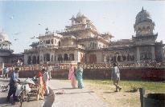
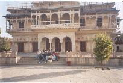
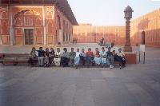
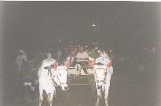
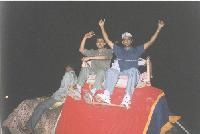
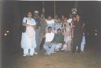
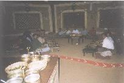
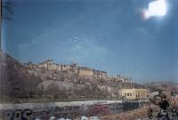
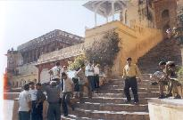
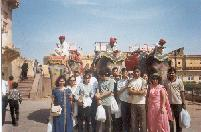

{kind=link}
{kind=link}
{kind=link}
 Hung around that place for a while. They have a huge armoury, and some
excellent paintings of Rajput battle strategies. I think maybe the next
version of Age of Empires could deal with Rajputs.
Hung around that place for a while. They have a huge armoury, and some
excellent paintings of Rajput battle strategies. I think maybe the next
version of Age of Empires could deal with Rajputs.
All images are protected by copyright. Consult the copyright page for more information. No images may be reproduced without the consent of the respective copyright holders unless mentioned otherwise.
 After we had freshened up in the hotel, we left for the city. Our first stop was the Palace Museum. Seriously. This place is maintained so badly, it hardly resembles a palace, and as far as being a museum goes, It was severely lacking. I still don't understand why they had cross sections and anatomical structures of various zoological specimens in the midst of the Mughal and Rajput paintings.
IMO, this isn't something you'd want to skip lunch for. It's a good thing we got those Pyaj (that's Onion for ye who don't know) Kachoris before leaving. Amit, Jacob, Mehta and I also shared one Mawa Kachori. It's hard to have more than that.
 We then went to the City Palace. The city palace is in the old city, which used to be surrounded by pink walls. We had to go through one of the pink gates to enter the city and then through the palace gates to get in.
 The City Palace is also like a museum, but well maintained. There were a couple of power failures while we were there, but nothing that lasted more than a minute or two. Most sights in Rajasthan require a separate ticket to take photographs, and we had one amongst all of us.
Hung around that place for a while. They have a huge armoury, and some
excellent paintings of Rajput battle strategies. I think maybe the next
version of Age of Empires could deal with Rajputs.
After the City Palace, we went to the Jowhari Bazaar for shopping. Didn't buy anything though.
  That evening we had dinner at a place called Chokhi Dhani. It's about an hour outside Jaipur, entrance Rs.190 per head, which covers dinner and any shows going on inside. There's also Elephant, Camel, Bullock cart and boat rides that you have to pay extra for.
It was a lot of fun, but most folks there want to be tipped - all except the guy who rows the boat. Most of us went on all the rides, but they were pretty short.
 It was about 10pm by the time we got dinner. We all sat cross legged on the floor, and dinner was served on a plate made of leaves. There were several types of sabjis (veg dishes) - all standard Rajasthani, lassun ka achaar (garlic pickle), four tiny (about the size of a thumb) earthen vessels filled with butter that you apply on your rotis, salad, jaggery and salt. Then they started bringing in the ghee and rotis. There is so much ghee in Rajasthani cooking it's impossible to imagine. We had different types of rotis. There was Jowar roti, Bajri roti, Missi roti, Makhi roti and Gehu roti, IIRC. I'm not quite sure about the ingredients of all of them.
 You apply butter on the roti and eat it with the vegetables or kadi. The Makhi roti is eaten with ghee and jaggery. The Missi roti is eaten with the garlic pickle. You eat and you eat and you eat, and when you've finished, they bring you some more. And if you say no, they bring you some more.
After all that, they bring in the Papad and then the Malpoa. Malpoa is a fried sweet dish. Then comes the rice. With ghee and sugar. At this time, a conversation between Bhavana and Vivek Nallur was overheard:
Bhavana: (pointing at the sugar) What's that?
Nallur: It's salt
Bhavana: No. I think it's solid ghee
In the end, there's only one thing I can say, "I'm glad my jeans were one size loose"
We left for the hotel at around 11pm and got in before 12. We were all going to need a lot of sleep to digest that food, but I think it went down well with everyone
 On the 23rd, we went to the Amber Fort. Most people skipped breakfast waiting for the cars to arrive. Amit and I - forever the hungry ones - decided to get Kachoris for breakfast. I had seen a couple of road side restaurants on my way back from church that morning, so we headed down there. JJ and Rahul joined us. Amit had Chole Kachori - which was excellent. The rest of us had Aloo Parathas <slurp> Breakfast was washed down with chai.
On the way to the fort we were stopped by a traffic cop because he couldn't see one of the seat belts. The car stopped next to a vegetable market and the guys in our car (Amit, and Vivek Mehta) bought some peas and carrots. We ate them raw (you should try it), while the hungry chaps in the other car watched through the wind screen.
Back to the fort... No, it's not Amber in colour, it's named after the Goddess Amba Mata who was worshipped by the Mina tribe. The fort is supposed to be surrounded by a lake, but it was dry when we got there.
 To get to the fort you've got to exit the Pink city from another one of those pink gates. There are many of them, known either by their English names - Ajmeri gate, Ghat gate, New gate, Chandpol gate, etc. - or their traditional names - Kishan pol, Shivpol, Man pol, Chandpol, etc. I think we get in through Kishan pol and out through Dhruvpol.
 We spent some time in the fort. One can get an elephant tour of the fort for Rs.400 for four people. We got ourselves a hindi speaking guide - because they were the cheapest we could find. He took us around the path that the Queens would take to get to the King's chamber. They actually had some kind of a rickshaw that ran throughout the fort. As a result, all chambers of the fort are accessible via slopes rather than stairs - which means this 16th century fort has better accessibility features than most buildings today.
We returned to the city for lunch and had daal bati churma at a small restaurant near the hotel. The bati is like a laddu made of rava and rice/wheat flour, and of course, ghee. You crush it up into your plate, and eat it with ghee and daal. There's also all the other vegetable curries, the lassun ka achaar and the rotis and jaggery. Lunch was great and came to about 50 bucks a head. The churma is a sweet bati which also has a lot of ghee in it.
In the afternoon, some people went shopping, while the rest of us stayed at the hotel.
The wedding was later that evening.
{kind=link}
{kind=link}
{kind=link}
{kind=link}
{kind=link}
{kind=link}
{kind=link}